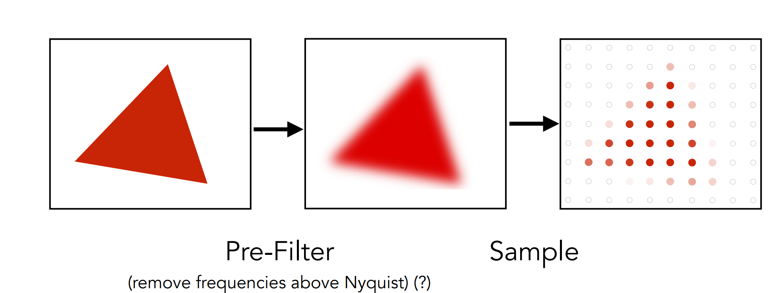
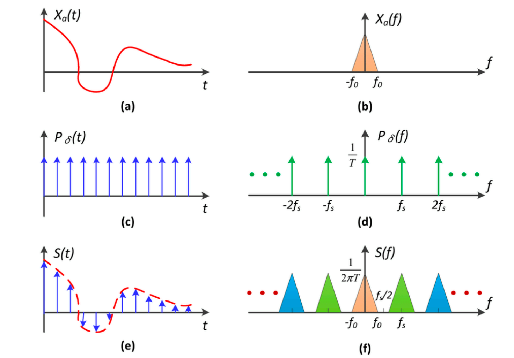
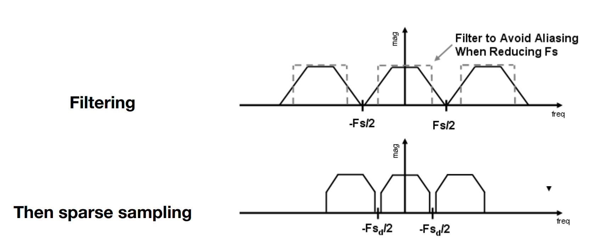
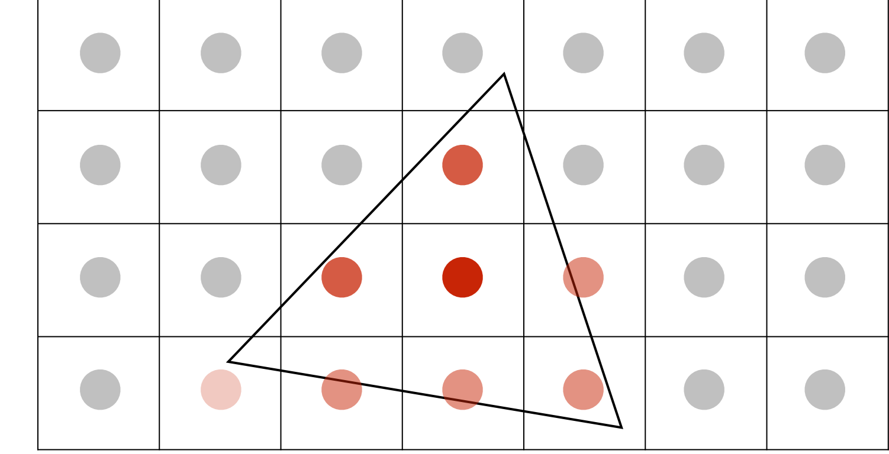

# 反走样 (antialiasing)
rasterization = sample 2D position
essence: Signals are changing too fast (high frequency), but sampled too slowly.
# 解决方案
注意到锯齿效应是像素点要么纯红要么纯黑。(如果能取中间值？)

先低通滤波再采样！
# 信号处理的解释
采样 = 在频率域解析延拓。

低通滤波以后进行采样，来避免 “混叠” 的现象

# 实际应用

用超采样 (e.g. 2x2) 在三角形内部的点的比例代替在三角形内部的面积。据此进行平均操作。